Da giudicare: l'opzione minima di D196 (4) prima di qualunque opzione piena. Le catture sono del client vero su partite e server veri (database temporaneo), a 1366×768 e 844×390. L'arte è il segnaposto nero di SB-32.
| Filtri | Personaggio (tutti, generiche, uno dei sette), rarità (comune, non comune, rara; «P» solo nel catalogo, dove ci sono i personaggi), tipo (azioni, oggetti) e la ricerca che c'era. Si intersecano. Il filtro per set non compare finché il set è uno. |
| Barra del mazzo | «Regolari n / 20 · legate n / 2 · ultima risorsa ✓», sempre in vista nell'editor: in alto a 1366×768, in basso a 844×390. Si tocca e apre il riepilogo. |
| Riepilogo (O15) | Personaggio, azione base, ultima risorsa, azioni legate e carte regolari con le copie e «Regolari n / 20». Si chiude con il tasto o con Esc. |
| Ordine | I personaggi in ordine di nome (poi per identificativo), uguale a ogni avvio del server. |
| Rarità | 1–3 pallini o «P» sulle facce del catalogo e dell'editor; mai sulle facce del tavolo. |
Vista compatta a righe, pannello del mazzo affiancato a 1366×768, «parti da uno starter».
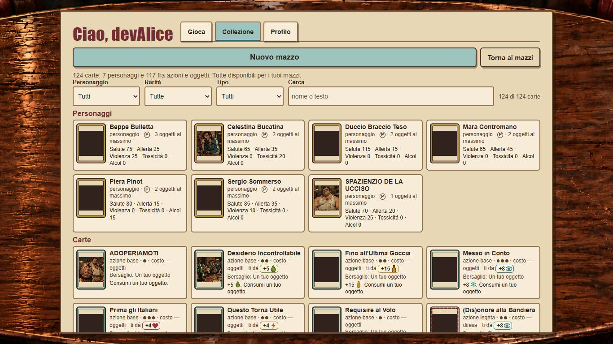
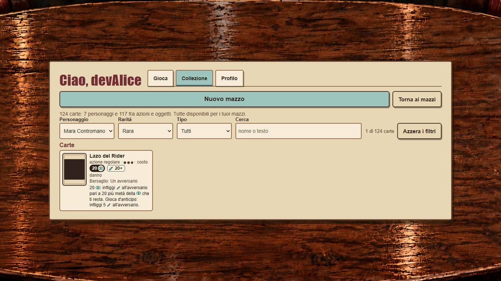
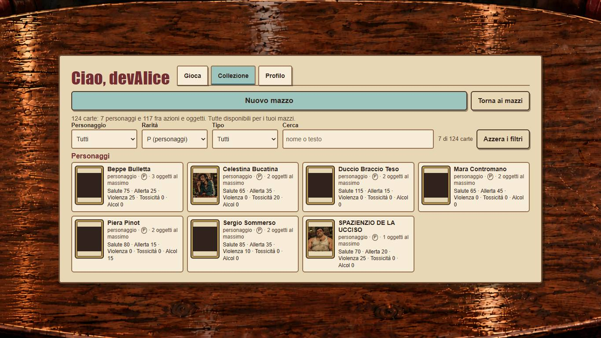
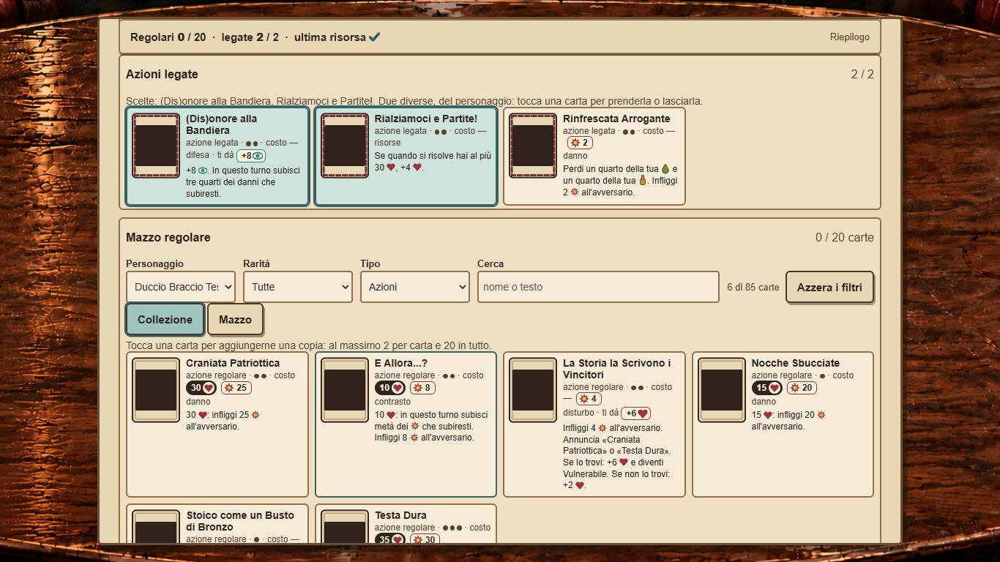
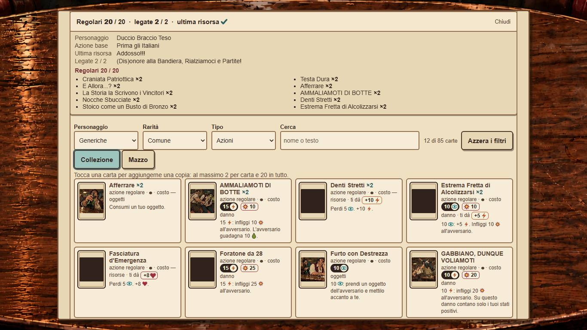
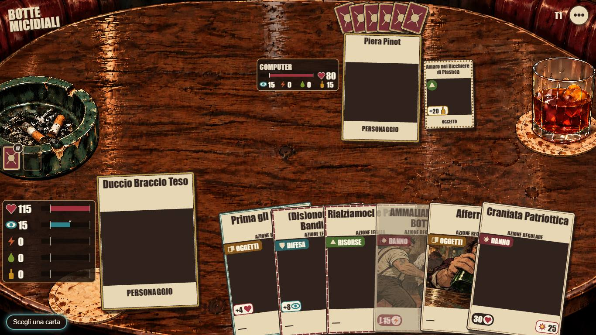
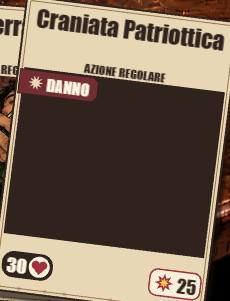
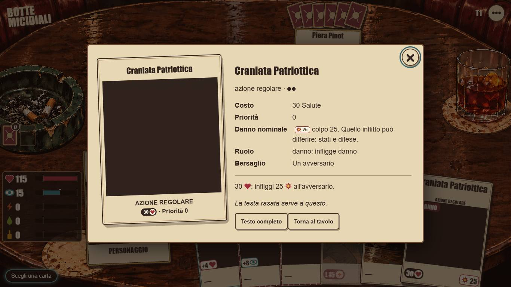
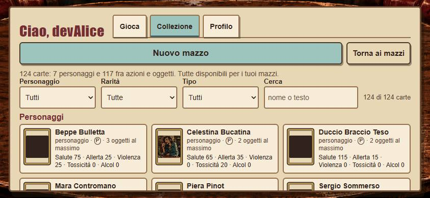
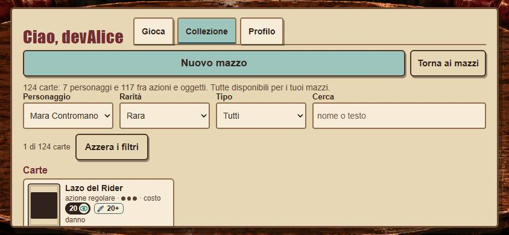
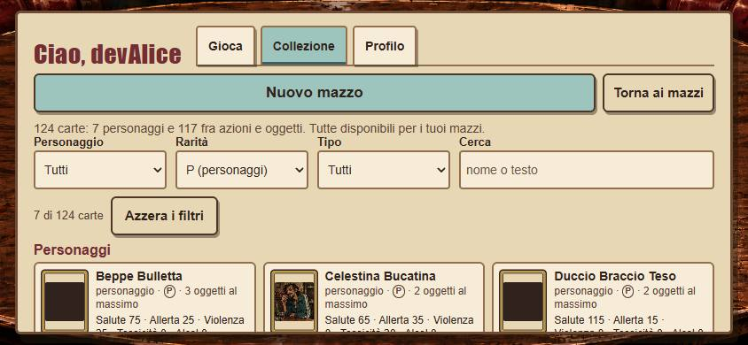
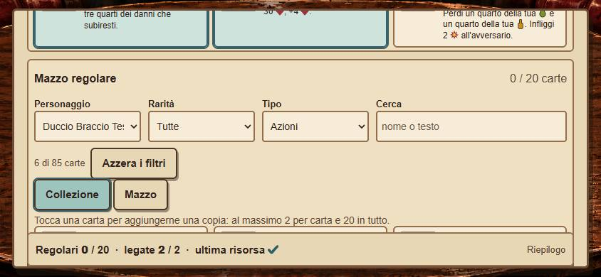
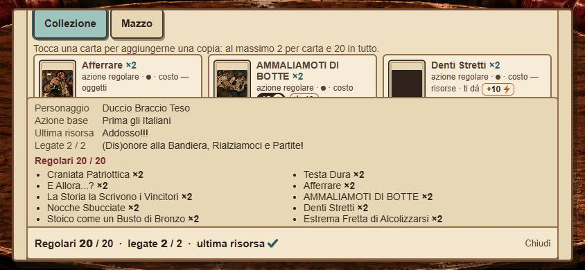
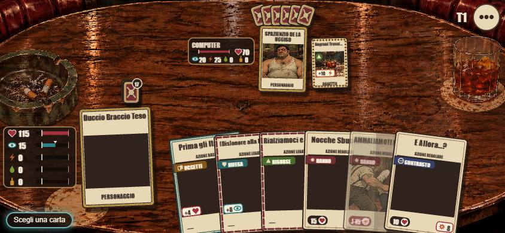
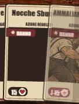
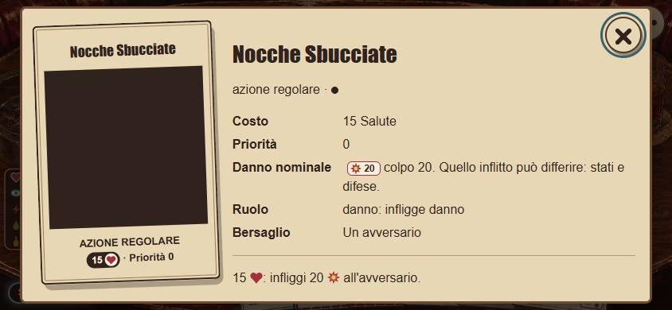
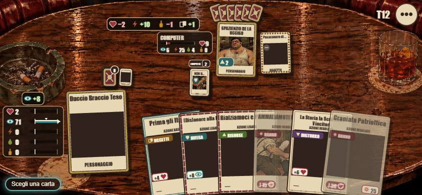
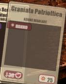
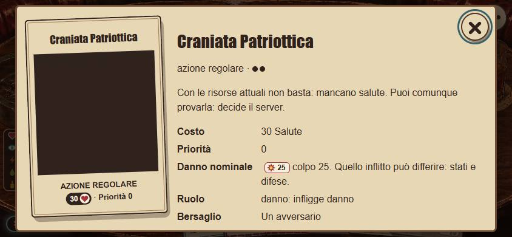